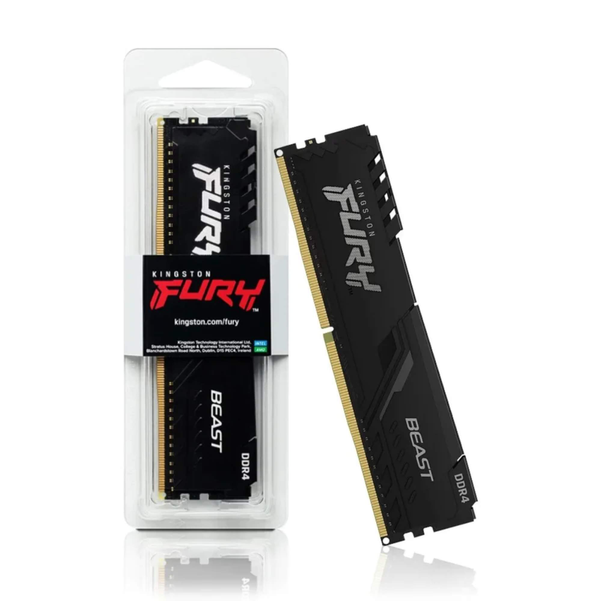

Pente único de 16GB DDR4 da linha Fury Beast, da Kingston, a 3200MHz. A linha Fury Beast é a mais conhecida da Kingston para uso gamer, com dissipador de alumínio e perfil de overclock.
Você fala direto com nosso time pelo WhatsApp, do começo ao fim — para tirar dúvida, fechar o pedido e acompanhar a entrega. Entrega em 24 horas ou até 7 dias úteis, conforme a seção do produto.
Todos os produtos são novos, lacrados e originais, vindos de fornecedores autorizados. Você tem 7 dias para troca ou devolução após o recebimento, conforme o Código de Defesa do Consumidor.
Temos técnicos em informática: montagem, configuração, otimização de desempenho, backup de dados e cabeamento estruturado — para computadores de uso pessoal, gamer e de escritório.